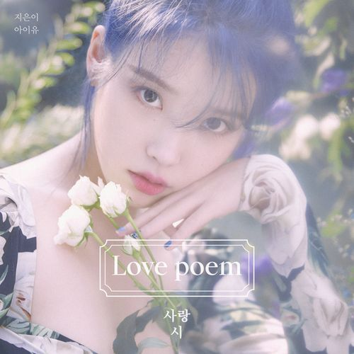

‘아이유(IU)' 미니 5집 [Love poem] 모든 문학에는 정답이 없다지만 그중 해석의 제한에서 가장 자유로운 것은 시가 아닐까 한다. 작품자의 순정만 담겨 있다면, 어떤 형태든 그 안에선 모든 것이 시적 허용된다. ‘시인’이라든가 ‘예술’이라든가 ‘영감’이라든가 ‘작품’과 같이 본인 입으로 얘기하기에는 왠지 좀 민망한 표현들에 대해 약간의 울렁증을 가지고 있는 내가, 앨범명을 뻔뻔하게 ‘사랑시’라고 지어 놓고도 하나도 부끄럽지 않은 이유는 여기 담은 것들이 전부 진심이기 때문이다. ‘아이유(IU)'의 다섯 번째 미니앨범 [Love poem]이 공개됐다. 지난 11월 1일 동명의 선공개 곡 ‘Love poem’이 각종 음원차트 1위를 휩쓸며 본 앨범에 대한 기대치를 한껏 고조시켜왔다. 이번 미니앨범 [Love poem]은 총 6곡이 수록되었으며 전곡을 아이유가 작사하고 2곡에 작곡으로 참여하며 다시 한번 프로듀서로의 역량을 발휘했다 이민수, 이종훈, 이채규, 제휘, 김희원 등 그동안 아이유의 타이틀곡 및 주요곡을 함께하며 아이유 음악 인생에 가장 큰 영향을 끼침과 동시에 음악적 정체성에 기여한 파트너라 칭할 수 있는 작곡진이 참여하여 Electro pop-rock, blues, Ethnic fantasy 등 유니크함과 서사적 감성을 오가는 장르들을 함께 완성했다. 더불어 홍소진, 적재 등 대한민국 최고의 뮤지션들이 편곡 및 연주에 참여하여 앨범의 완성도를 더욱 높였다. 또한 지난 선공개 곡 ‘Love poem’에서 화제가 되었던 곡 설명에 이어 이번 역시 전체 수록곡에 대한 아이유의 곡 해석 및 주석들이 음악을 듣는 이로 하여금 한층 더 몰입감과 감동을 선사할 예정이다.
